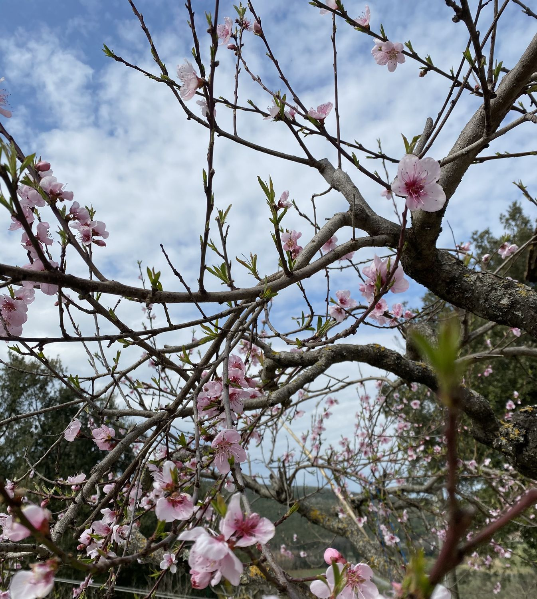
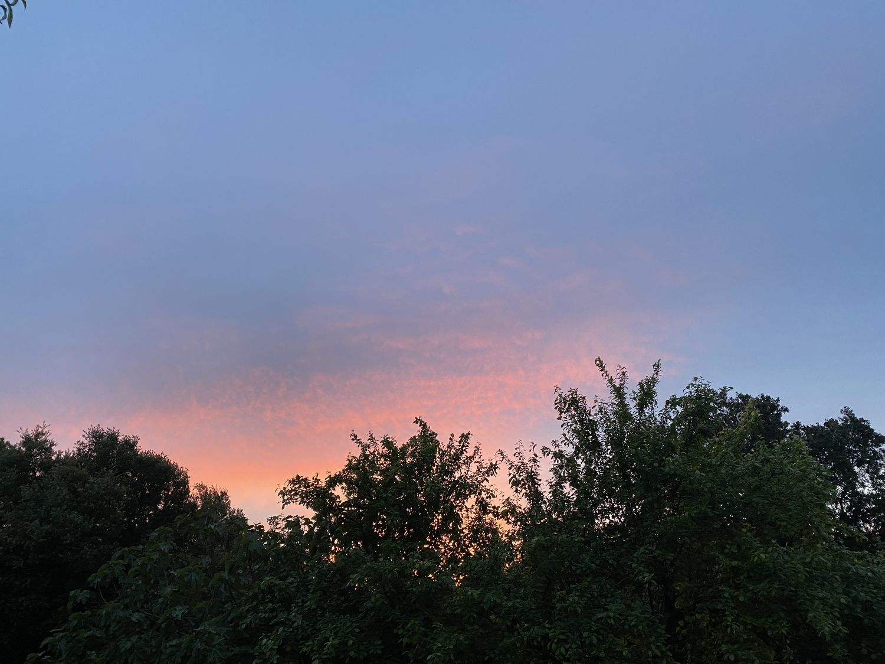
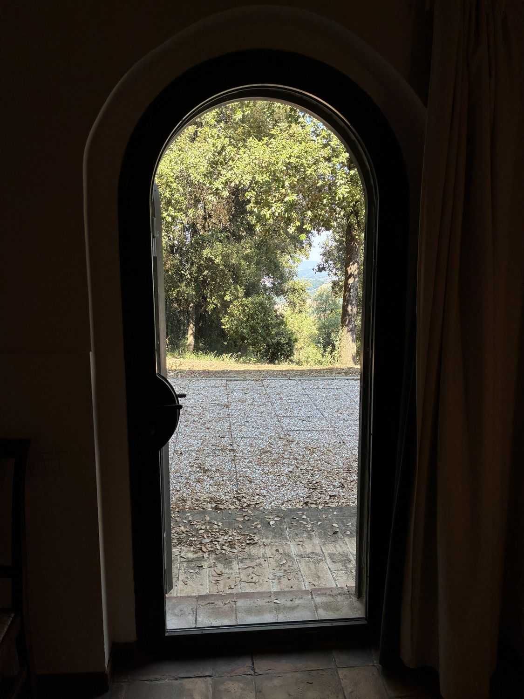
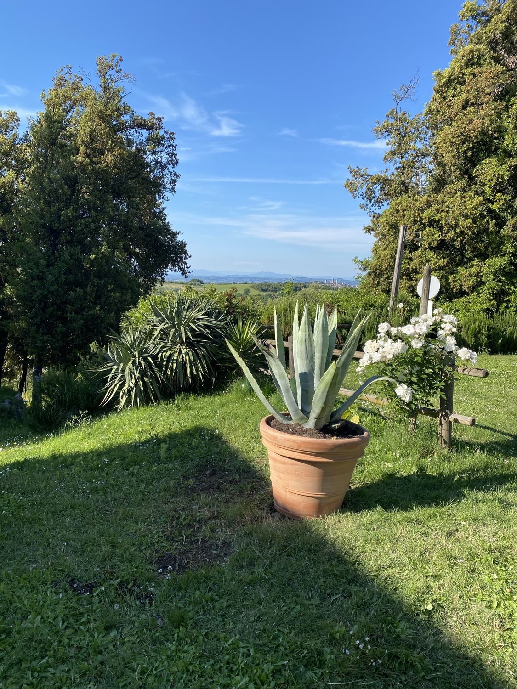
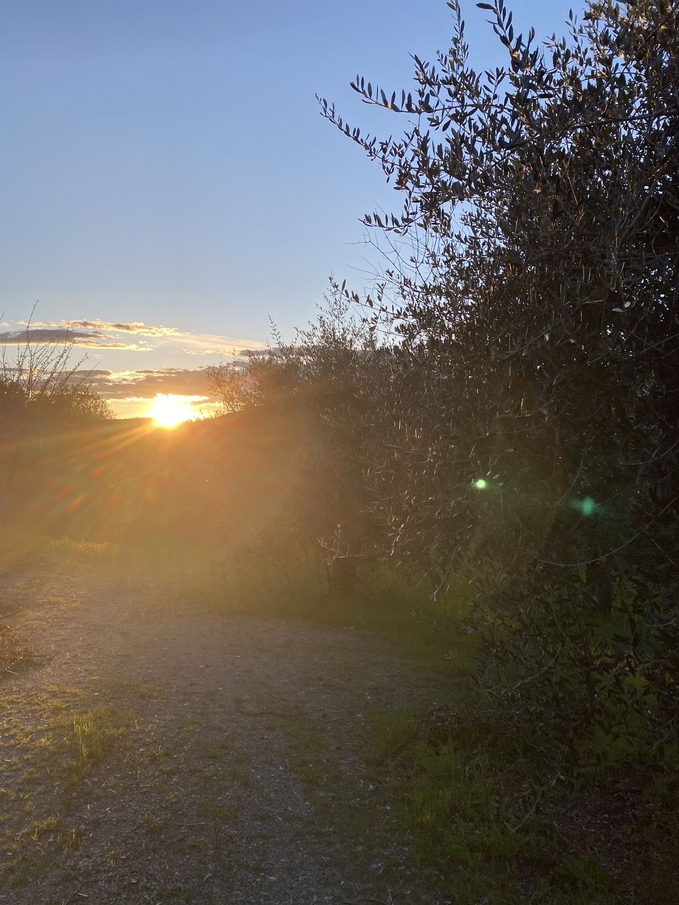
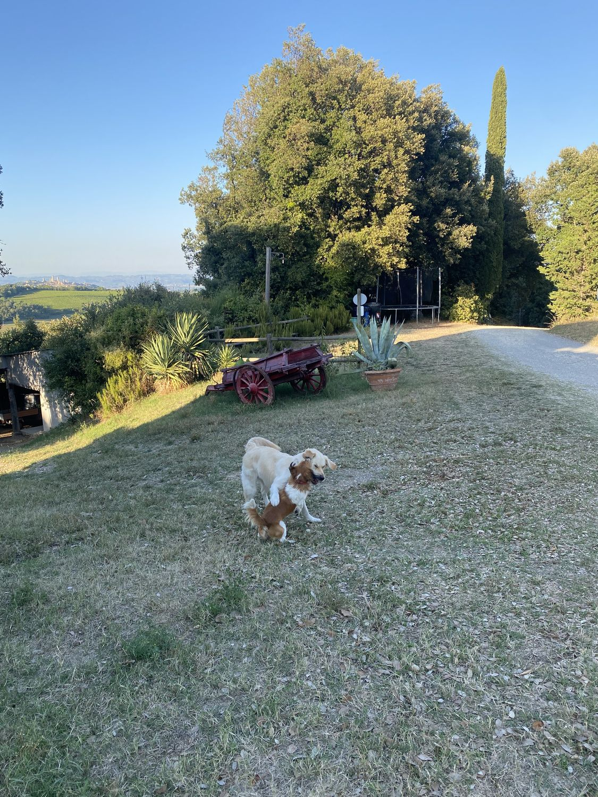

Chi Siamo
Un casale, una collina, una famiglia. E la scelta di vivere al ritmo della terra.

Il podere
La Collina dei Lecci è un podere su una collina vicino a San Gimignano. Il nome viene dai lecci centenari che circondano la casa, alberi che erano già qui quando il casale è stato costruito, e che continuano a fare ombra nel giardino ogni estate.
La proprietà comprende vigneto, oliveto, orto e bosco. Una dimensione familiare, coltivata dai proprietari che abitano qui.
La storia
Il casale è stato un podere mezzadrile fino agli anni Cinquanta. Poi l'esodo dalle campagne l'ha svuotato, e per trent'anni le stanze sono rimaste chiuse con i mobili coperti dai teli.
Il restauro ha mantenuto la struttura originale, aggiungendo il necessario per stare comodi.
L'agriturismo è nato nel 2003, quasi per caso: amici di amici che chiedevano di poter stare qualche giorno. Poi ospiti che tornavano ogni anno. Poi altri che arrivavano per la prima volta e restavano più del previsto.
"Non abbiamo trasformato un casale in un albergo. Abbiamo aperto la nostra casa a chi ha voglia di condividere il nostro modo di vivere — anche solo per qualche giorno."
Come lavoriamo
Coltiviamo seguendo i ritmi della campagna. Lavoriamo in famiglia, senza fretta.
Abbiamo l'aiuto di poche persone del posto al momento della vendemmia e della raccolta. Non abbiamo dipendenti a tempo pieno, animatori, o servizio in camera. Siamo noi. Questo, per chi viene qui, è di solito un pregio.
Le nostre foto
Tramonti, giornate di sole, e qualche foto del nostro mitico cane Totò!










